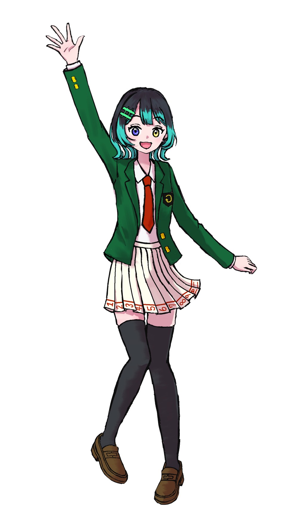

CHARACTERS
Cola Voice Character Database

名前
：
希測ピコKisoku Pico
声
：
パルス波（矩形波duty12.5%）
身長
：
可変（表示環境依存）
体重
：
2.8MB（圧縮時）
誕生日
：
12月24日
好き
：
未知、ネットサーフィン、弟
苦手
：
ルール、制限、オウム
座右の銘
：
「理性よりも好奇心」
プログラム（Python）で作りました。
高い音域の声が特徴です。
名前の由来は、矩形波のピコピコ音。
インターネットを徘徊する不思議な少女。
ゴミ箱のプログラムから生まれた、双子の姉。
リンクをたどるようにして、様々なサイトやデバイスの中を自由に行き来している。
好奇心旺盛なトラブルメーカーで、何事にも「挑戦」するタイプ。
アクセス制限のかかったページや、隠されたファイルを見つけると、
すぐに中を覗こうとするが、たいていは弟に制止されている。
なぜかオウムを異常に恐れている。理由は不明だが、過去に何かあったのかもしれない。
DOWNLOAD
image here
名前
：
希測アトKisoku Atto
声
：
加工矩形波
身長
：
可変（表示環境依存）
体重
：
未定
誕生日
：
◯月◯日
好き
：
不変、引きこもり、姉
苦手
：
慣れないこと、クソコード
座右の銘
：
「やる後悔よりやらない後悔」
新たな母音と、
ピコのときに作った子音を再利用して制作中。
インターネットに存在する不思議な少年。
没になり、放置されていたコードから生まれた存在。
リンクをたどるようにして、様々なサイトやデバイスの中を自由に行き来できる。
基本的に自分から行動しない性格で、ピコのサポート役。
普段は何もせずメモリの奥で眠っているが、
頻繁に姉の「例外」な行動で無理やり表に出される。
内心少しだけそれを待っているらしい。 DOWNLOAD
Coming someday?
Coming someday?